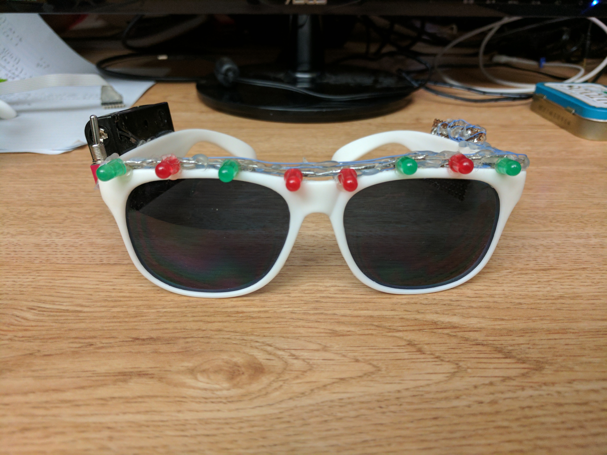
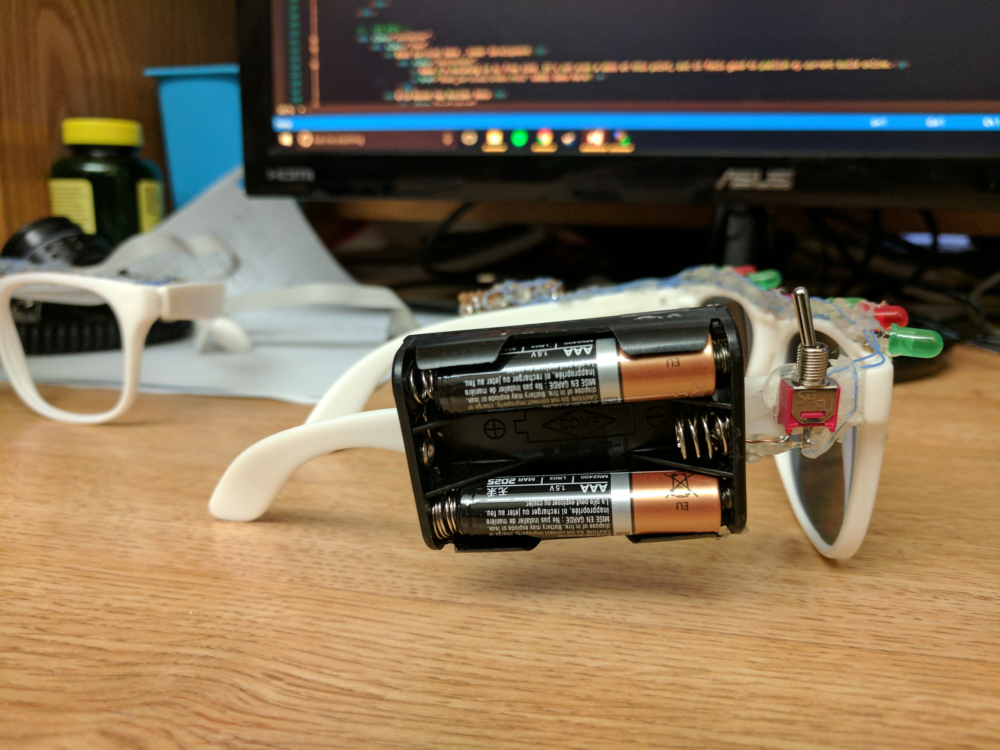
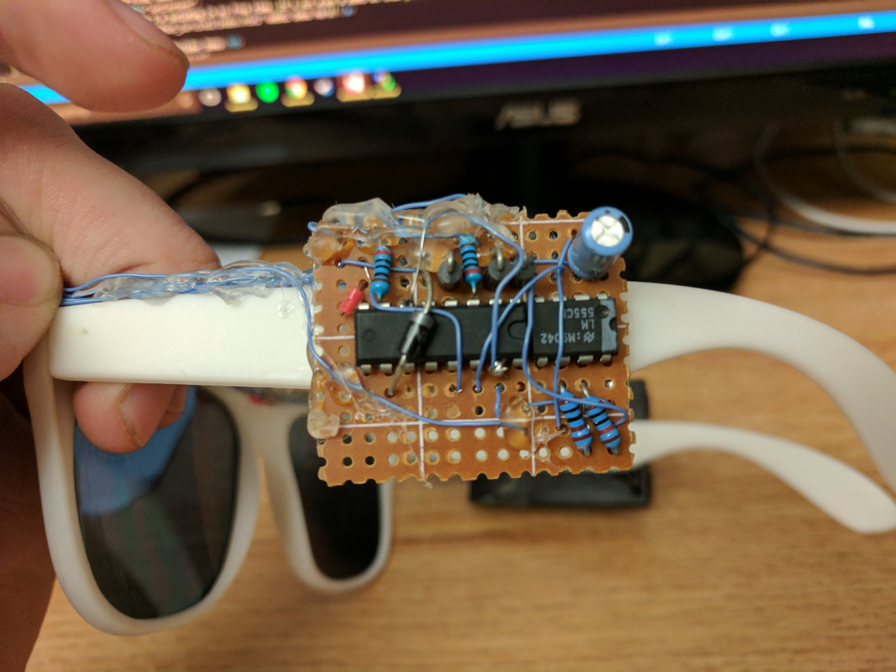
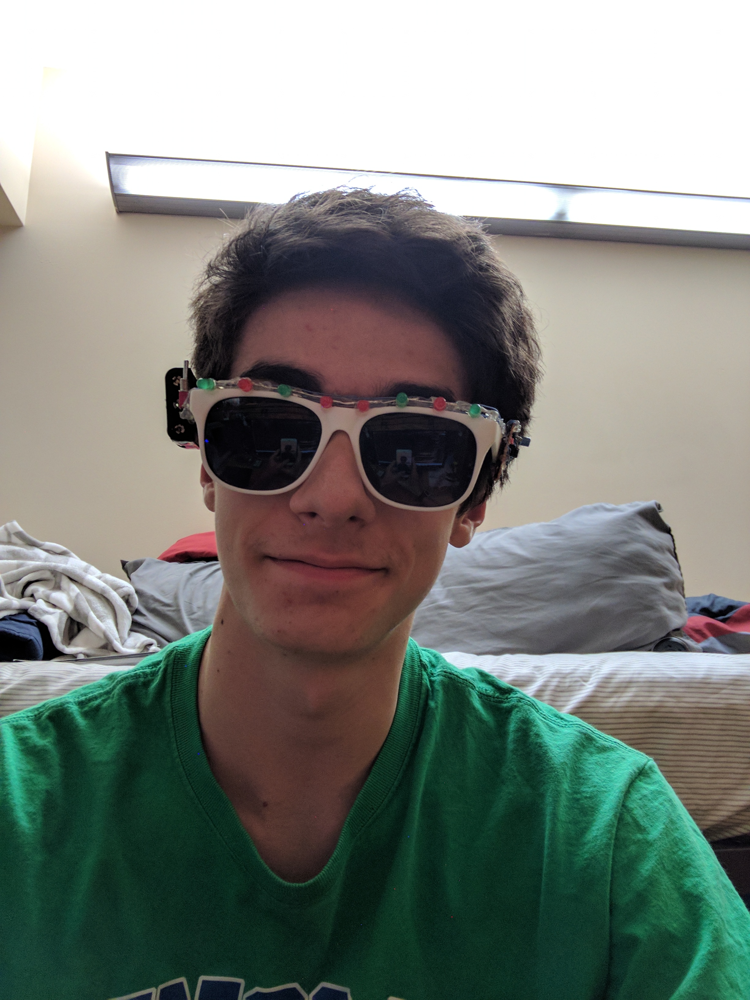

This is the first iteration of lightup glasses. These were hastily put together with parts laying around.
I used standard 5mm LEDs, which looked funny and required a decent amount of power. Also notice the wiring mess -- all of LEDs are individually wired with a common ground.

The power supply was a simple hobby AAA battery holder mounted on the side of the glasses. It means that the right side of the glasses were heavier and sagged on my head.
Here you can see the 16 pin decade counter and the 8 pin timer IC. The 555 timer chip's output wired directly into the decade counter's clock line. The decade counter's ten stages are wired to the different LEDs.
 